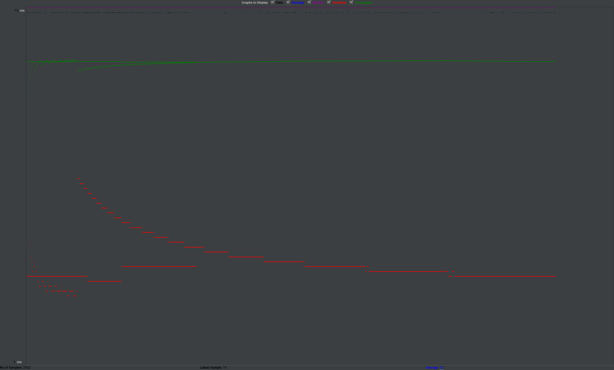
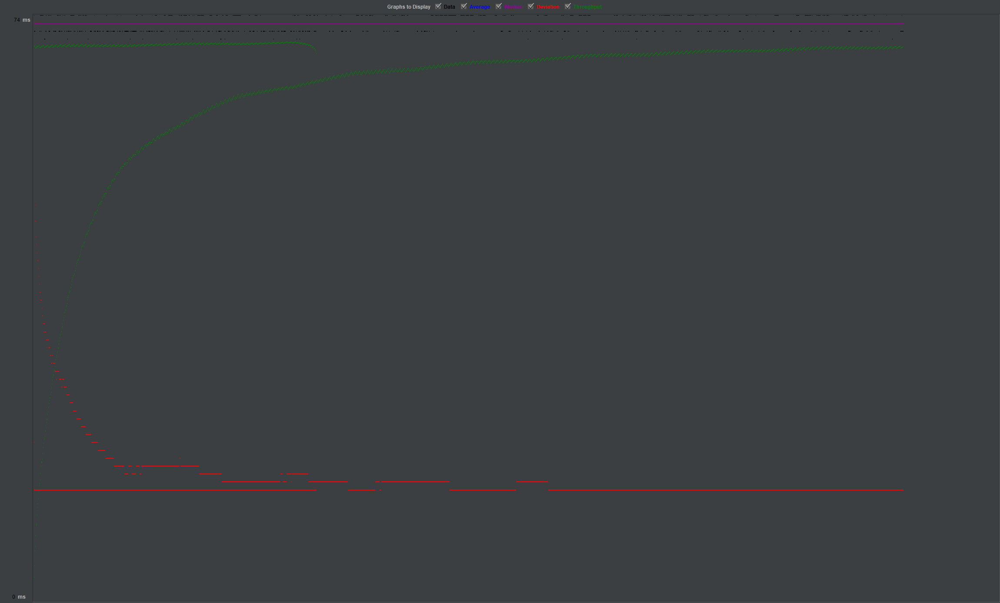
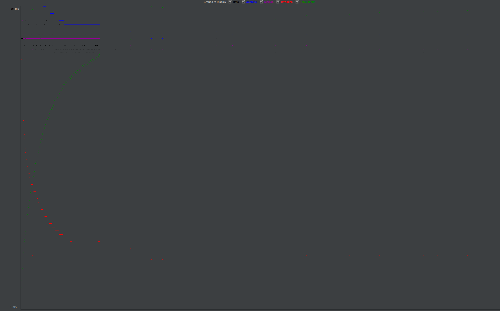
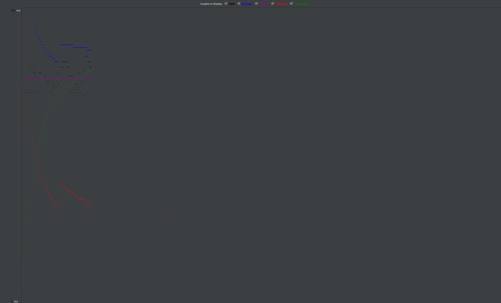

| Single-instance version cases |
Graph Results Screenshot |
Average Query Time(ms) |
Average Search Servlet Time(ms) |
Average JDBC Time(ms) |
Analysis |
| Case 1: HTTP/1 thread |
 |
76 |
.35 |
.24 |
the average is lower than 10 threads because dont need to switch between threads |
| Case 2: HTTP/10 threads |
 |
76 |
.65 |
.55 |
is slower on average but faster because 10 threads worknig at the same time |
Case 4: HTTP/10 threads/No prepared statements |
 |
76 |
3.8 |
3.2 |
takes very long time because doesnt use prepared statement, we can see that prepared statement is very effective |
| Case 5: HTTP/10 threads/No connection pooling |
 |
87 |
.35 |
.25 |
no pooling doesnt really affect speed because we're only using 1 instance, actually it even faster than the 10 threads with pooling |